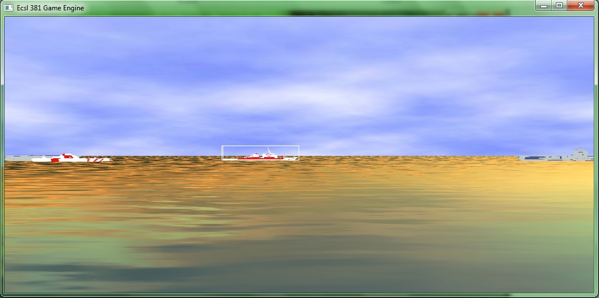
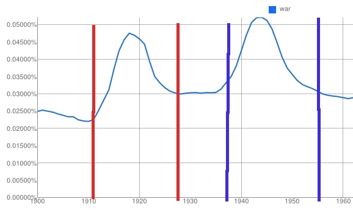

"It's my flower," by *thomaswievegg

GOLEM-toys and magic, by ~randis

link later

This was a screenshot of one of our first python ogre projects. We finally got mouse selection working and were thrilled. The sky and the water don't match because python ogre use the trick of pre-generated water for each default sky, and we had swapped water but not sky files.

This was a graph of the Google N-Gram data for 'war' after smoothing and with the peaks marked. The program automatically detected peaks, and found words which peaked at similar times, but I do not have any of the completed graphs, only the "in progress" ones. I'll have to look for those on the other machine.